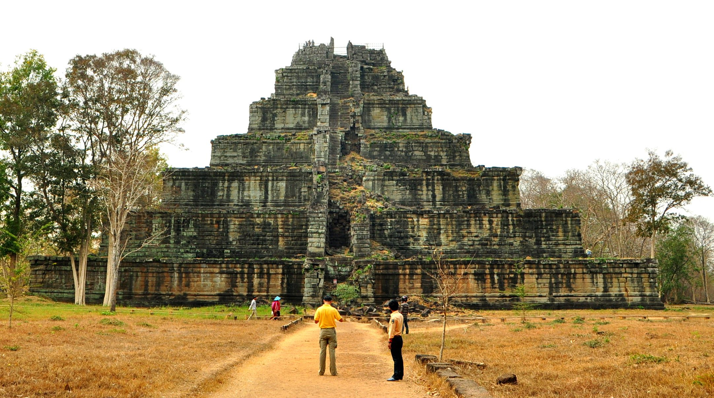

Koh Ker
Koh Ker, the ancient capital of Cambodia, is a remote archaeological site located in northern Cambodia. Koh Ker, once briefly the capital of the Khmer Empire from 928 to 944 AD, is known for its impressive monuments, including the 36-meter tall Prasat Thom, a seven-tiered pyramid, which is unique in Khmer architecture. Under the reign of King Jayavarman IV, Koh Ker was the epicenter of the empire, featuring over a hundred temples and shrines, many of which are adorned with intricate carvings and sculptures. After Jayavarman IV's death, the capital was relocated back to Angkor, leaving Koh Ker largely abandoned and forgotten until its rediscovery in the 19th century.